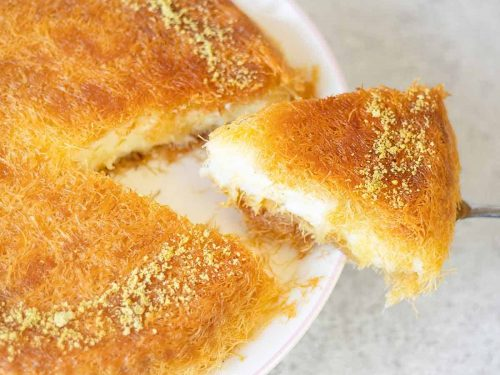

Kunafa

Kunafa is a traditional Middle Eastern dessert made with spun pastry
called kataifi, soaked in a sweet, sugar-based syrup called attar, and
typically layered with cheese, or with other ingredients such as clotted
cream, pistachio or nuts, depending on the region. It is popular in the
Middle East.
Ingredients
- Kunafa Dough
- Sugar
- Milk
- Heavy Cream
- Condensed Milk
- Cornstarch
- Butter
- Pistachio powder
Steps
-
Preheat your oven to 180 C/ 356 F with the rack on the bottom of the
oven.
-
Kunafa crust. Coat your 22 cm/ 9 inch baking tray with some butter/ghee.
-
Shred semi-frozen kunafa dough into 1.5 inch/ 4 cm long pieces over a
large bowl. Add the remaining butter and mix with kunafa shreds to coat
evenly. Transfer half of the dough to the tray and press firmly ,lining
sides of the tray so it will hold the cream filling and prevent it from
burning.
-
Making cream filling. In a medium saucepan heat milk and heavy cream;
then add sugar and cornstarch and whisk until completely dissolved over
medium heat. Bring to a boil, stirring constantly. Boil until the
mixture thickens. Remove from the stove and pour over the crust, spread
with a spatula.
-
Top with the remaining kunafa shreds evenly and bake 30-40 minutes or
until golden.
-
Remove kunafa from the oven and pour condensed milk, covering the entire
surface. You might not need the whole can.
- Garnish with ground pistachio.
- Allow kunafa rest for 10-15 min to absorb the condensed milk.
- Serve warm.
Return to Top
Return to main page